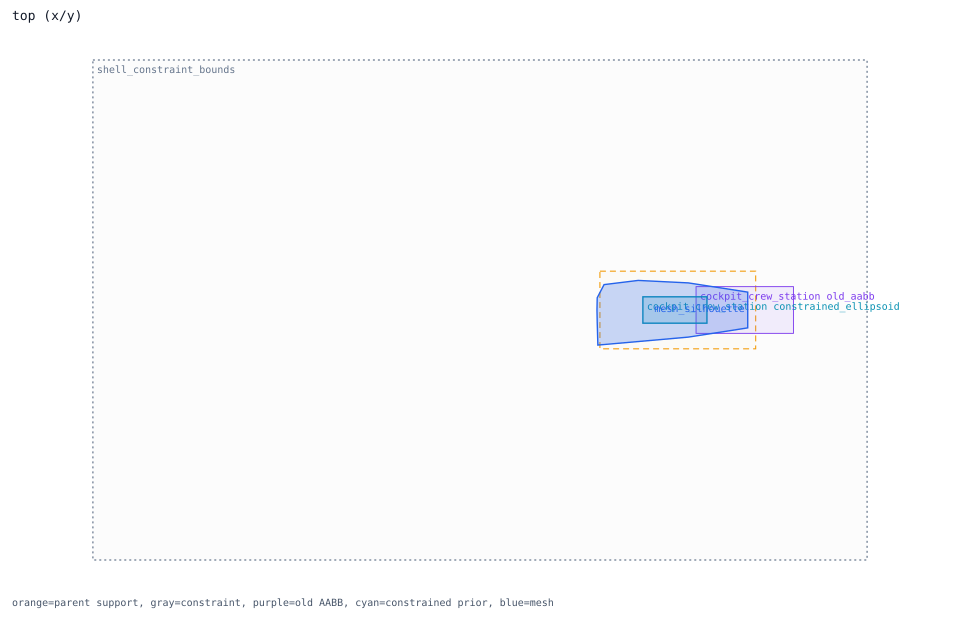
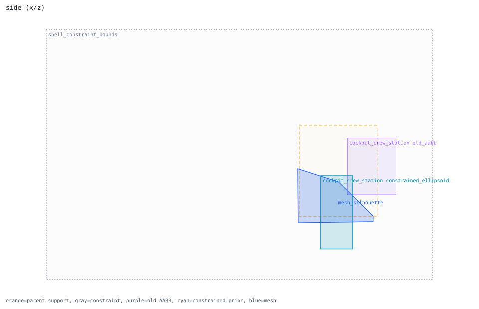
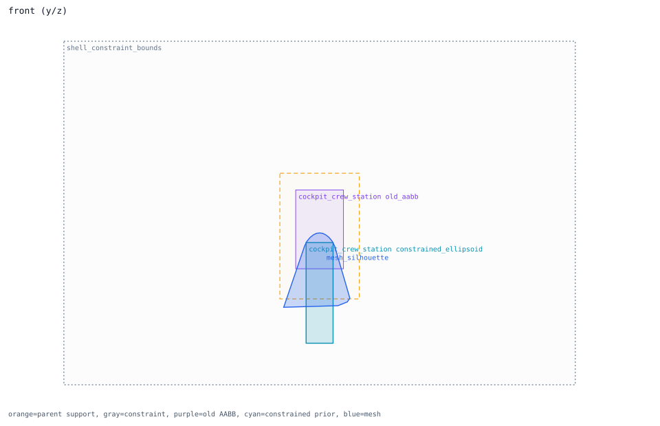

cockpit_crew_station
ellipsoid prior -> forward_fuselage; constraint status placed_inside_airframe_exceeds_parent_shell_review
Trace Details
- component: cockpit_crew_station
- system: cockpit
- role: crew_volume_receiver
- prior shape: ellipsoid axis=none
- bound region: forward_fuselage
- constraint regions: canopy, forward_fuselage
- constraint mode: multi_region_placement_source_region_bounds_whole_airframe_constraint
- constraint status: placed_inside_airframe_exceeds_parent_shell_review
- old AABB containment: 0.64554
- adjustment: {"airframe_projection_center_shift_m": 0.0, "center_shift_m": 0.0, "placement_outside_fraction": 0.35489, "post_constraint_outside_fraction": 0.0, "pre_constraint_outside_fraction": 0.0, "required_fit_scale": 1.0, "shrink_scale": 1.0, "size_preserved": true, "size_shrink_allowed": false}
- component review semantics: candidate_direct_region_binding
- rationale: crew station is not a single hardware box; width is anchored to public ACES II seat dimensions while length/height remain a crew-envelope estimate; R21 promotes the R20 canopy/forward-fuselage crew-envelope placement candidate because it preserves the nominal crew envelope and clears sampled silhouette exposure.
- runtime projection: runtime_schema_candidate_not_activated_prior_shape_review_required


